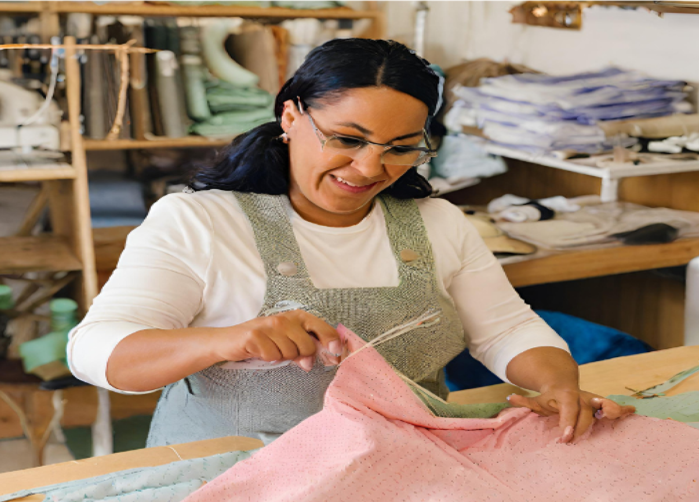

Dona Maria
Ateliê da Dona Maria costurando com amor desde 1987

Dona Maria: A costureira de décadas
Há mais de três décadas, em 1987, na tranquila cidade de São João da Costura, uma mulher chamada Maria de
Oliveira deu início a uma jornada que se tornaria uma verdadeira paixão e profissão de vida. Maria,
carinhosamente chamada de Dona Maria pelos moradores locais, tinha um talento nato para a costura desde sua
infância. Com uma avó que era costureira habilidosa, ela cresceu cercada por tecidos coloridos, agulhas e
linhas.
Com o passar dos anos, Dona Maria ganhou uma reputação impecável por sua atenção aos detalhes, qualidade de seu
trabalho e habilidades excepcionais de costura. Muitos de seus clientes eram pessoas que voltavam repetidamente,
confiando nela para criar suas roupas mais especiais e significativas.
Hoje, Dona Maria continua a operar seu ateliê com a mesma paixão e dedicação que tinha em 1987. Ela também
compartilha seu conhecimento e experiência com jovens aspirantes a costureiros, garantindo que o amor pela
costura seja passado adiante para as próximas gerações.